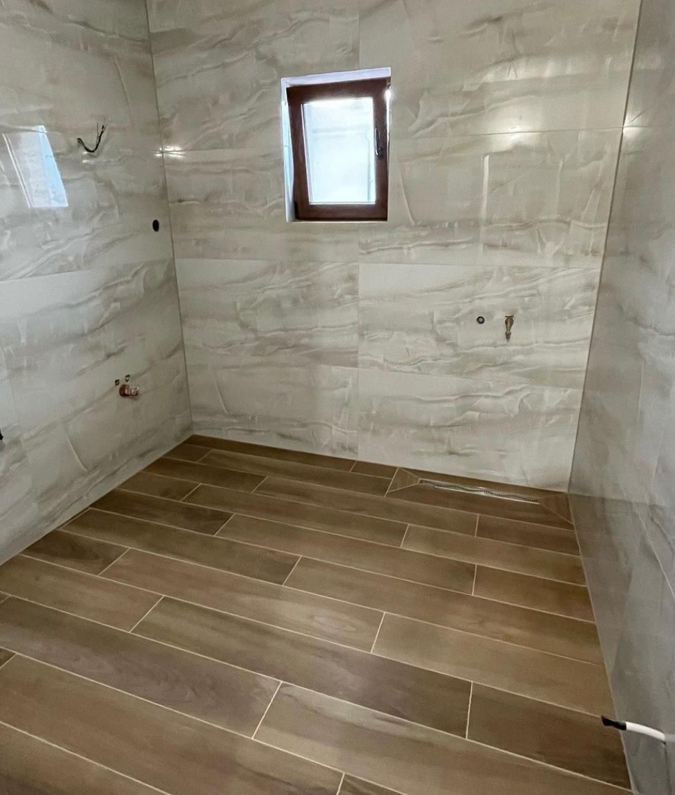
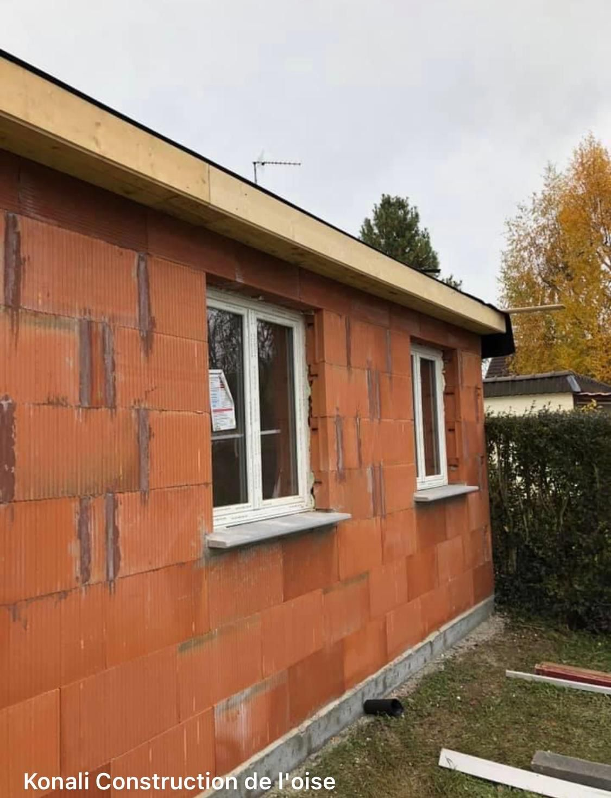
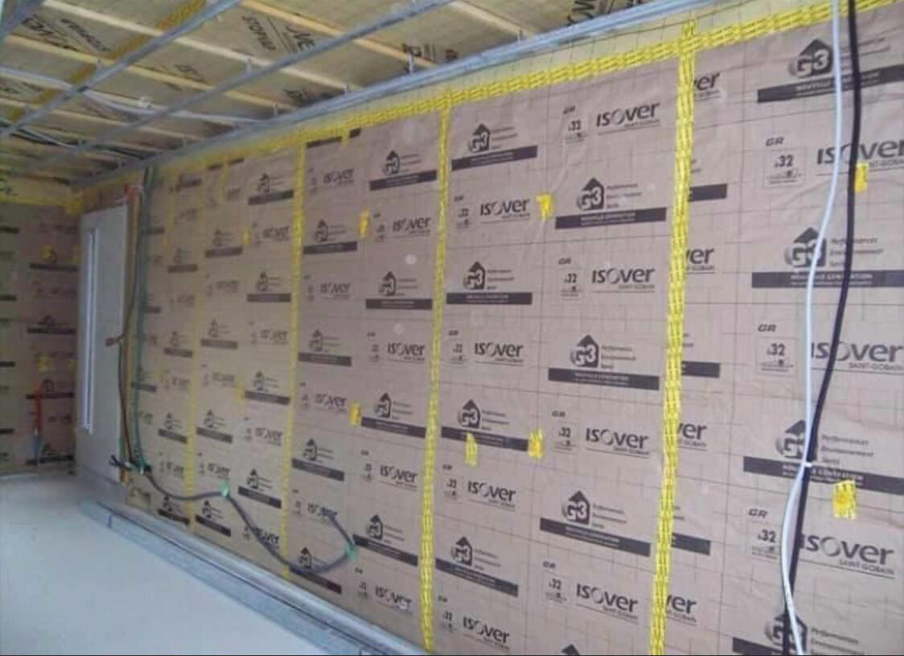
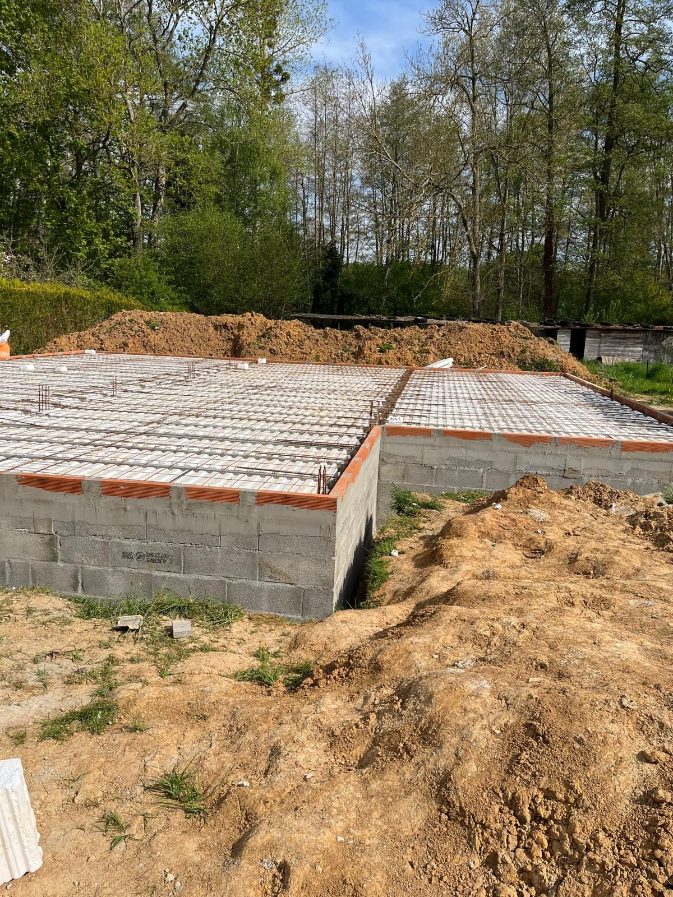
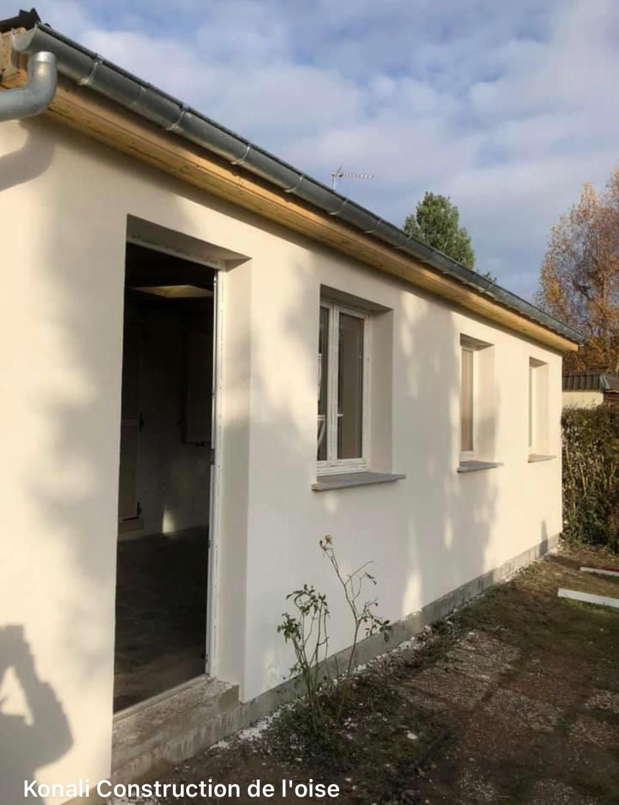
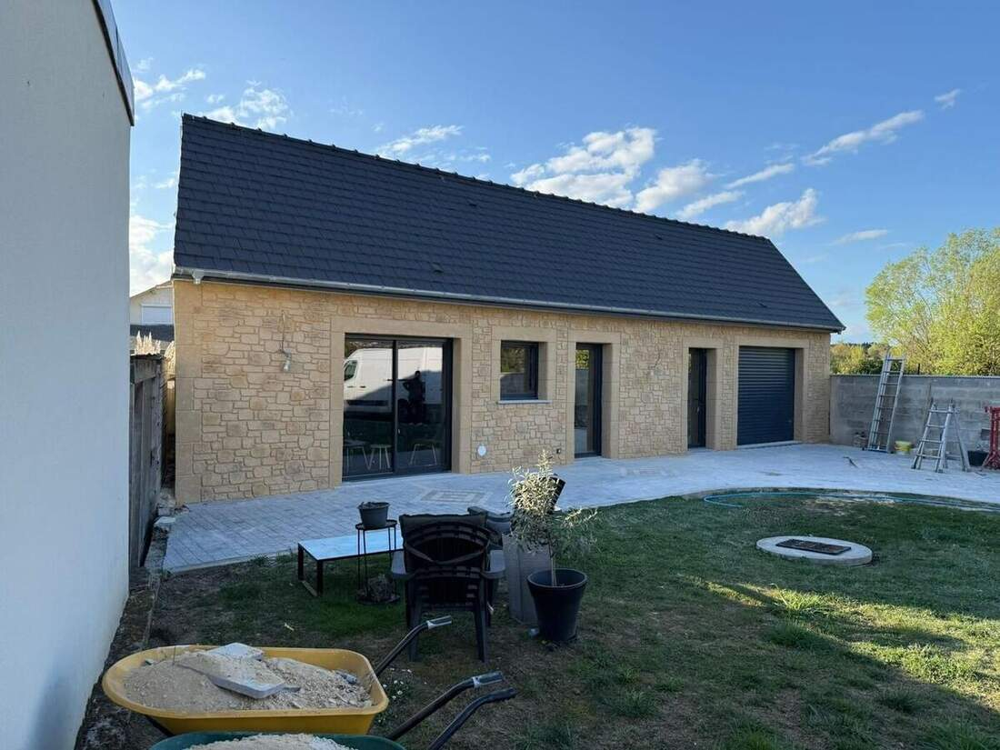
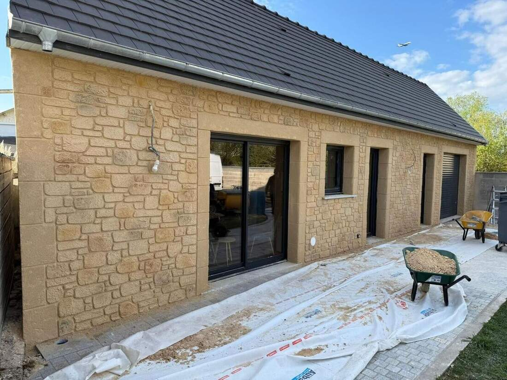
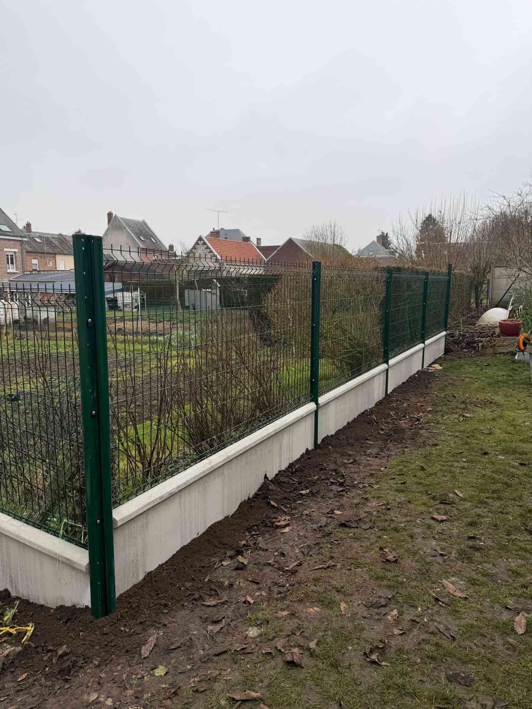

Votre projet sera notre prochaine réalisation
Demander un devis gratuitPortfolio
Chantiers réalisés dans l'Oise — gros œuvre, isolation et rénovation








Votre projet sera notre prochaine réalisation
Demander un devis gratuit